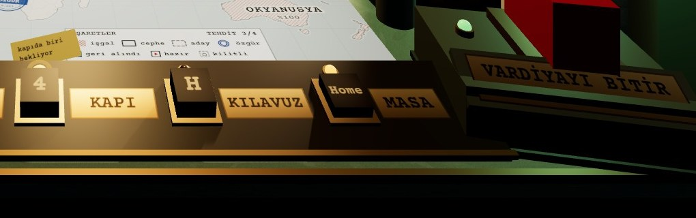
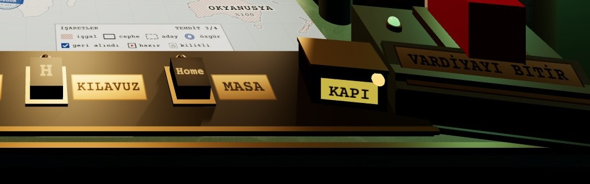

A · ANAHTAR RAYINDA 4 · KAPIÖNERİLEN

+Kısayol dili zaten tuş rayı: kapıya gitmek = 4. Amber lamba 1 Hz yanıp söner, tuşa el yazısı fiş bağlanır.
+Kenar satırında da 4 KAPI fişi olur; her pozdan aynı yol.
−Ray beş tuştan altıya çıkar; plakalar 0,128 m'ye daralır.
B · MASADA UYARI KUTUSU

+Ray değişmez; kutu şalterin yanında, vardiyayı bitirirken gözün geçtiği yerde.
−Kısayolu olmayan yeni bir nesne; kapıya gitmenin yolu yine tıklamak.
−Kenar satırında karşılığı yok; sığınak ve harita pozlarında görünmez.